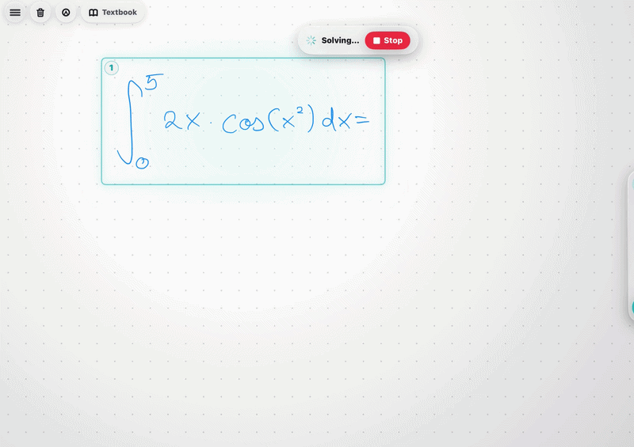

The tutor that watches the pen.
Klera is an iPad whiteboard tutor. It reads how you write, not just what, and answers in handwriting.

By the time a student says they are stuck, the struggle has already happened.
The pause before the wrong line. The pressure in the pen. The line rewritten three times. Klera reads that while it happens, instead of waiting to be asked.
Two students. Two different ways of being stuck.
These are real measurements from the two of us, taken on separate iPads. Each blue box is one student’s calm range. Each orange orb is one attempt where that student was genuinely stuck. Move your pointer to turn the space, and hover an orb to read it.
The 3D view needs WebGL. Choose an attempt to read its measurements.
Student A’s stuck attempt sits far outside his calm box on pressure. Student B’s never leave his: his tell was the pause before writing, which this chart cannot show. Read the full measurements.
What is inside.
Five ways to ask, one that gives the answer
Hint, Mistake, Next step and Explain each refuse to finish the problem. Only Solve completes the work, and using it counts against independence.
See the five actionsAnswers in handwriting
Help arrives as lines of ink on the board, written stroke by stroke.
Watch it writePast papers, marked
Sit a real paper by hand and get marked against the official scheme.
How exams workA profile built from your own pen
Klera learns how you write when calm and measures drift from it. It never compares you to anyone else, and it says nothing until it has enough of you to be right.
How the profile worksBuilt to be needed less.
Tutoring is paid by the hour, so it quietly profits from being needed more. Klera is built to make itself unnecessary.